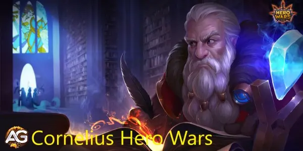
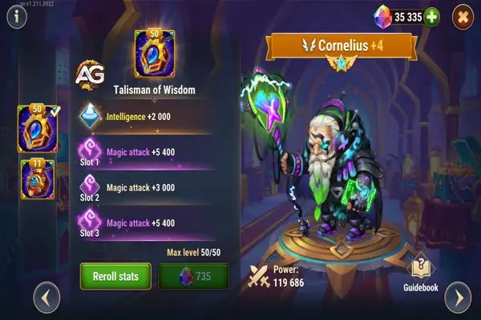
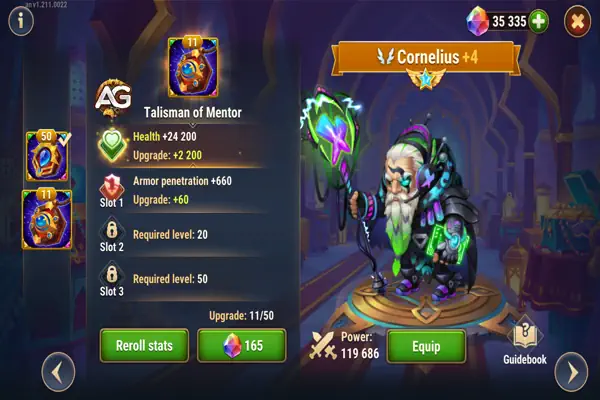
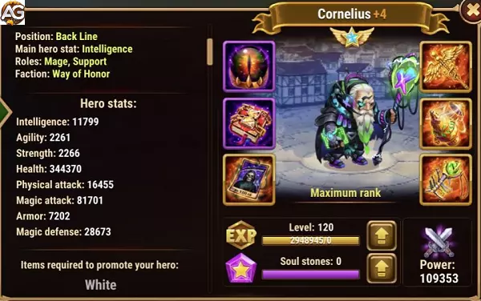

Descubra como desbloquear todo o potencial de Cornelius em Hero Wars Alliance com nosso tutorial detalhado. Aprenda as melhores estratégias para priorizar sua evolução, glifos, artefatos e skins, e monte equipes vencedoras que dominam o campo de batalha com seu escudo mágico e habilidades de contra-ataque.

| Main Attributes | |
| Position: | Linha de Fundo |
| Function: | Mago, Suporte |
| Primary Statistic: | Inteligência |
| Faction: | Honra |
| Tier List 2025 | |
| Tier List Geral: | C |
| Tier List de Hidra: | B |
Cornelius se destaca como o contra-ataque definitivo aos magos em Hero Wars, oferecendo defesa incomparável contra ataques mágicos. Investir em Cornelius é uma decisão estratégica que pode melhorar significativamente o desempenho de sua equipe, especialmente contra composições com muitos magos. Neste tutorial abrangente, exploraremos as complexidades das habilidades de Cornelius, composições de equipe ideais e estratégias eficazes para dominar o campo de batalha.
Cornelius possui um conjunto diversificado de habilidades adaptadas para combater ameaças mágicas e infligir ataques devastadores nos magos inimigos. Vamos analisar mais de perto suas habilidades:
Para maximizar a eficácia de Cornelius, é crucial construir uma composição de equipe sinérgica. Aqui estão alguns heróis recomendados para complementar Cornelius:
Agora que você entende as habilidades de Cornelius e as composições de equipe ideais, vamos explorar algumas dicas estratégicas para utilizá-lo efetivamente:
Cornelius emerge como uma força formidável no campo de batalha, oferecendo habilidades inigualáveis para combater magos inimigos e virar o jogo a seu favor. Ao entender suas habilidades, criar composições de equipe sinérgicas e implementar estratégias eficazes, você pode aproveitar todo o potencial de Cornelius e alcançar a vitória em Hero Wars Alliance. Prepare sua equipe, planeje com precisão e libere o poder de Cornelius para dominar o reino como nunca antes.
Cornelius possui dois principais talismãs: Talismã da Sabedoria e Talismã do Mentor. Ambos oferecem vantagens distintas, dependendo se você deseja melhorar suas capacidades de suporte ou aumentar seu poder ofensivo.
O Talismã da Sabedoria aumenta a inteligência e o ataque mágico de Cornelius, tornando-o mais forte em fornecer suporte e executar suas habilidades de forma eficaz. Como o ataque físico de Cornelius depende da inteligência do inimigo, este talismã ajuda a aumentar o dano ao aproveitar suas estatísticas de ataque mágico.
| Slot | Estatísticas | Pontos Máximos |
|---|---|---|
| 0 | Inteligência | +2.000 |
| 1 | Ataque Mágico | +6.600 |
| 2 | Ataque Mágico | +6.600 |
| 3 | Ataque Mágico | +6.600 |

Este talismã é ideal se você quiser que Cornelius desempenhe um papel de suporte, aprimorando suas habilidades para reduzir o ataque mágico dos inimigos e fornecer defesa mágica temporária aos aliados. Cornelius é particularmente útil ao apoiar heróis como Keira, pois seu ataque mágico aumenta a sobrevivência dela contra dano mágico.
O Talismã do Mentor, por outro lado, foca em aumentar a vida de Cornelius e sua perfuração de armadura, tornando-o mais ofensivo e capaz de causar mais dano. Com este talismã, Cornelius se torna melhor em ignorar as defesas do inimigo, especialmente contra inimigos com escudo, que de outra forma bloqueariam seus ataques.
| Slot | Estatísticas | Pontos Máximos |
|---|---|---|
| 0 | Vida | +110.000 |
| 1 | Perfuração de Armadura | +6.600 |
| 2 | Perfuração de Armadura | +6.600 |
| 3 | Perfuração de Armadura | +6.600 |

Este talismã é uma ótima escolha se você deseja que Cornelius aja como um causador de dano mais agressivo, capaz de perfurar as defesas inimigas com sua recém-adicionada perfuração de armadura.
Para Papel de Suporte: O Talismã da Sabedoria é mais adequado para dar suporte à sua equipe, aprimorando as habilidades de Cornelius para enfraquecer inimigos e proteger aliados. É particularmente eficaz para equipes onde Cornelius não é o principal causador de dano.
Para Papel Ofensivo: O Talismã do Mentor é a melhor opção se você quer que Cornelius foque em causar dano, especialmente contra inimigos altamente defensivos. Este talismã lhe concede perfuração de armadura, tornando-o mais forte no ataque, embora ele ainda dependa de ataque mágico para seu dano total.
Se você quer que Cornelius seja um herói de suporte, escolha o Talismã da Sabedoria. Mas se você precisar que ele se torne um causador de dano, o Talismã do Mentor será a melhor escolha.
Neste guia, detalharemos a prioridade de evolução para Cornelius em Hero Wars Alliance, abrangendo estatísticas, glifos, artefatos e skins.
| Stats | Prioridade |
|---|---|
| Ataque Mágico | Alta |
| Inteligência | Média |
| Vida | Alta |
| Defesa Mágica | Média |
| Armadura | Baixa |
| Glifos | Prioridade |
|---|---|
| Ataque Mágico | Alta |
| Inteligência | Média |
| Vida | Alta |
| Defesa Mágica | Alta |
| Armadura | Baixa |
| Artefato | Prioridade |
|---|---|
| Livro | Primeiro |
| Arma (Defesa Mágica) | Segundo |
| Anel | Último |
| Skins | Prioridade |
|---|---|
| Ataque Mágico | Alta |
| Vida | Alta |
| Inteligência | Média |
| Defesa Mágica | Média |
| Armadura | Baixa |

Cornelius é um bom herói contra as Hidras e pode ajudar seu time protegendo com seu escudo absorvendo danos mágicos, Cornelius pode ser um bom aliado contra Hidras Mágicas fazendo seu time resistir por mais tempo; principalmente para jogadores iniciantes
| Composição do Time |
|---|
| Phobos, SemRosto, Cornelius, Morrigan, Corvus |
| Fafnir, Cornelius, Keira, Morrigan, Corvus |
| Fafnir, Artemis, Cornelius, Tristan, Julius |
| Fafnir, Artemis, Cornelius, Tristan, Galahad |
| Phobos, Cornelius, Iris, Morrigan, Corvus |
| Phobos, SemRosto, Cornelius, Jorgen, Astaroth |
| Cornelius, Yasmine, Tristan, Luther, Machadinha |
| Martha, Cornelius, Jorgen, Morrigan, Corvus |
| Cornelius, Jorgen, Celeste, Satori, Astaroth |
| Martha, Cornelius, Jorgen, Satori, Astaroth |
O tutorial sobre Cornelius oferece uma visão abrangente de como maximizar o potencial deste herói em Hero Wars Alliance. Ao detalhar as prioridades de evolução em estatísticas, glifos, artefatos e skins, e fornecer exemplos de equipes ideais, os jogadores podem agora entender melhor como utilizar eficazmente Cornelius em suas estratégias de jogo.
Compreender as habilidades únicas de Cornelius, como seu escudo mágico e suas capacidades de contra-ataque contra magos inimigos, permite aos jogadores formar equipes sinérgicas que podem dominar o campo de batalha. Além disso, a priorização de estatísticas, glifos e artefatos certos pode impulsionar ainda mais o desempenho de Cornelius e de sua equipe.
Em resumo, ao seguir as orientações fornecidas neste tutorial, os jogadores podem desbloquear todo o potencial de Cornelius e utilizá-lo para alcançar a vitória em Hero Wars Alliance, conquistando desafios e subindo nas classificações com confiança.
Você gostou do nosso Guia do Cornelius? Há algo que não entendeu ou gostaria de sugerir mudanças? Convidamos você a se juntar à nossa sessão de comentários na página do Alexandre Games Blog. Não hesite em expressar sua opinião, clarificar suas dúvidas e compartilhar sua sugestões.
Clique no botão abaixo para começar:

 Cogu e Mélio
Cogu e Mélio Corvus
Corvus